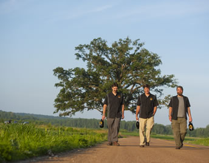
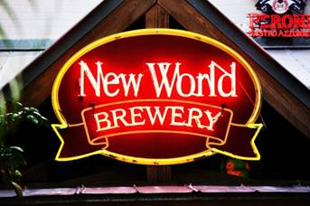
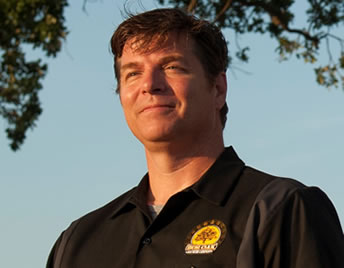
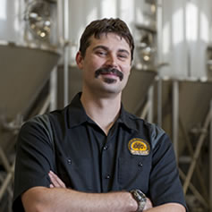
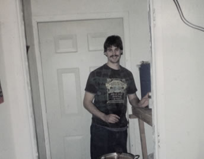
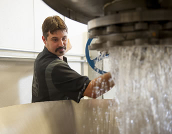
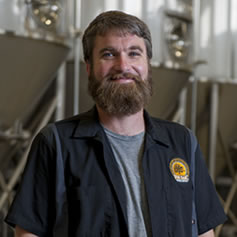
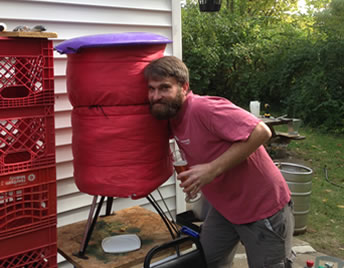
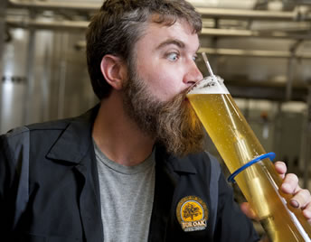

Growing up in eastern Iowa along the banks of the Mississippi River, Davenport is a quiet town to raise a family with a strong work ethic and pride for community. I was born in 1965. Enjoying the art of tinkering as a child, I found myself attracted to the world of mechanical engineering and began studies at University of Iowa. Meeting my wife Janine, we set forth on our wedded life in Tampa, FL, in pursuit of her career as a professor, prior to me completing school.
In 1995, Tampa is where the world of craft beer awakened me. The World Brewery right across from my office window, where I was a mechanical designer by day and student by night, beckoned me daily. The flavors of Germany, France and Belgium excited a palate I didn’t know existed. I continued to work on my studies at night but was inspired by the variations of craft beer. After three years an opportunity for my wife became available at Central Michigan University. The additional benefit was I could finish my degree in engineering for free. So we packed up and moved to Mt. Pleasant, MI, to a town of 20,000+ people. My hunger for quality craft beer was devastating. It was like going to a friend’s house to watch his color television and then going home to my own black and white set.
As a child, I spent a lot of time helping my mother cook. Being French, she cooked with beer, wine and spirits, and I gained an appreciation for food and drink at a young age. As a young man I was always fascinated by the natural world and science. At 19 years old I met my wife Desiree, we quickly fell in love and started our life together. At our first apartment is when I first started to home brew. My neighbor gave me a home brew magazine, I was instantly intrigued and ordered a sample kit.
Janine, in support of everything I do, bought me a home brewing beer kit for Christmas. The lights were back on and things became vibrant again. However, this time I had control of the flavors. I instituted my tinkering abilities to make new and creative flavors. I brewed as often as I could. Friends would tell me that I should sell the stuff. However, still stuck on finishing my degree in engineering, I thought “wiser” for completing what I started. Once graduated from Central Michigan University in 2001, we set sail for Columbia. Having recognized the strong sense of community that we were accustomed to as children, it felt more like home than anything else. After some manufacturing experience and a successful career at the University of Missouri, I decided the time was right to make my passion my profession.
I invested a lot of time and energy in finding what differentiates a successful brewery from a not so successful brewery. In effort to keep the business focused, I assembled a top tier board of advisors to keep the pathway true. With some help of business people in Columbia, we have made Bur Oak Brewing Company a reality. The name Bur Oak Brewing Company came from my recognition of the strength, beauty, longevity and strong sense of presence of community of the big tree at McBaine Bottoms.
Cheers,
As a child, I spent a lot of time helping my mother cook. Being French, she cooked with beer, wine and spirits, and I gained an appreciation for food and drink at a young age. As a young man I was always fascinated by the natural world and science. At 19 years old I met my wife Desiree, we quickly fell in love and started our life together. At our first apartment is when I first started to home brew. My neighbor gave me a home brew magazine, I was instantly intrigued and ordered a sample kit. I hit the ground running and brewed as often as I could afford and read as many books as I could find. I decided that this what I wanted to do for a living. I loved the science and art that is brewing. Brewing to me reaches back into the depths of our history and culture, and is at the very foundation of our understanding biology and chemistry. There was a small brewery called the Tuscan Brewing Company outside of town where I volunteered my free time helping the owner brew and package his beers. He was unable to hire me so I worked for free malt and hops.
At the age of 24, I started my first official brewing job at Butte Creek Brewing Company, an organic brewery in Chico, CA. I started out cleaning kegs and driving the forklift. I worked my way into the cellar and then into the brew house and, eventually, I ran the lab and brewed on the morning shift. I worked for Butte Creek for three and a half years. To provide for my growing family (we have two daughters, Savannah and Isabella), I took a job as a brewer and lab tech at the Lost Coast Brewery in Eureka, CA, on the North Coast of California. During my time at Lost Coast I started working on my formal brewing education. I received a Certificate of Brewing from the Institute of Brewing and Distilling of London. I am currently working on my diploma.
Even after nearly 10 years, I still love to home brew and enjoy learning the science and history of brewing. I always want to become better and grow as a brewer. Becoming the Head Brewer of the Bur Oak Brewing Company is an honor and a dream come true. I have a great opportunity to meet my own potential and start a new period in my life as a leader. My family and I are excited to start a new life in Columbia, and we look forward to becoming a part of the local culture. As head brewer my focus will be on simple but clean, bold flavors. Our beers will only contain a few ingredients, but through skill and technique we will brew beers of great appearance and taste and allow the drinker to pick up on each ingredient and taste each component in the beer.
Cheers,
Raised on a northwest Missouri farm near Armstrong, Missouri (pop. 310), I learned many things, including hard work, ingenuity, and pride in my work. I also had a strong urge to “create”, and share what I had created. While the Howard County community enjoyed their “fair share” of beer, craft beer was not to be found. I wasn’t exposed to different styles of beer until moving to Columbia to attend the University of Missouri. One day a professor inquired if anyone had any Culligan water jugs. He informed us that he used them to make beer, and would gladly take them off our hands. This was the first time I had heard of someone making their own beer and I was intrigued. After a few years of studying computer engineering I decided that it wasn’t the path for me. I started pursuing a career as a chef. Learning to combine new flavors and create new dishes was exciting and rewarding. Between work and a roommate that was always drinking new beers; I began to be exposed to new and exciting flavors and aromas that I had never expected from beer.
About a year later, as a friend and I were moving into a new place, I noticed that he had equipment for making beer. After a few months of it sitting idly in the basement, I decided I was going to try it for myself. I started by doing my research. I read “The Complete Joy of Homebrewing” and now more relaxed (but not yet having a home brew) I started my first batch of Irish Stout and I was hooked! This was the perfect way fill my urge to create and share. Over the next 13 years I continued to brew whenever I could find time, always seeking out more knowledge and refining my technique. Columbia Beer Enthusiasts provided me an outlet to discuss, share and learn more about craft beer. CBE was an incubator for homebrew feedback and comments. The excitement of sharing homebrew fostered many new friendships and discussions centered around the craft beer culture. Winning the Best in Show from a Cool Stuff homebrew competition, my confidence was reinforced this was the right path for me. When I’m not brewing, I enjoy cooking, camping, canoeing, fishing, hiking, and biking all with good friends.
Now, as a brewer at Bur Oak Brewing Company, I have the opportunity to learn new and more refined techniques for making great beer and my ability to share what I create has grown exponentially! Working with the C(K)raigs is great and although I have left the brewery exhausted, it hasn’t felt like work!
Cheers,